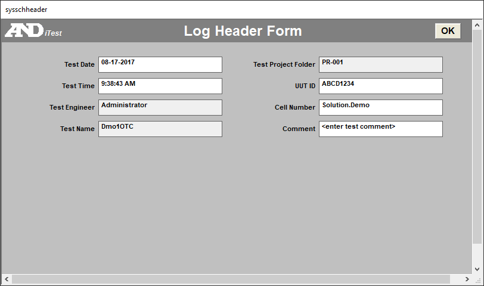
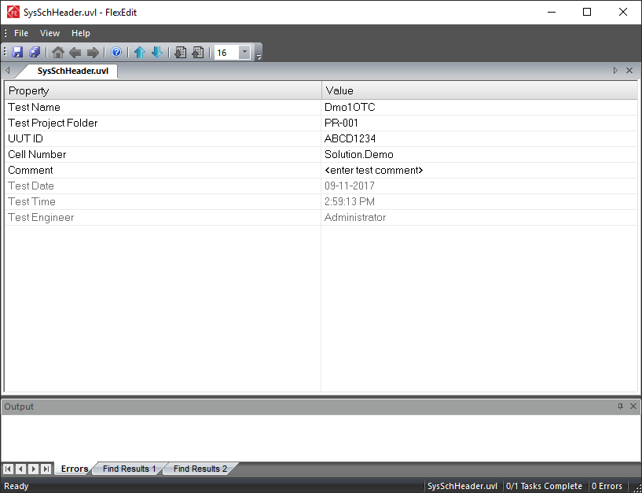
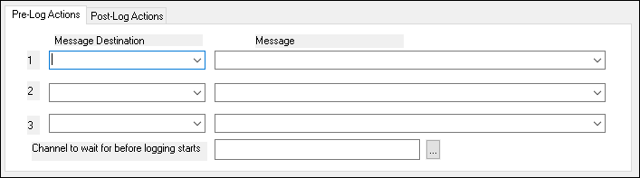

iTest User's Guide
The iTest data logging feature enables you to create, save, and use data files for reporting and analysis. Data logs are composed of three different parts: information from the data log editor, log order lists, and log header forms. Combined, these elements allow you to create logs customized for your testing needs. The first step to creating a data log is to define the log header form. You can then create a log order list file and use the data log editor to combine the different parts that create the data log. The following sections describe this process.
Log header forms are used to define the list of channels that appear at the top of the data file, known as the header. They can also be used to present a dialog to the operator before starting a test, prompting them to enter data. The log header form is created using the Log Header Forms editor in Test Manager. The log header form files are referred to as user variable list files (UVL) and use the .uvl extension.
 |
NOTE: | Log header form files are stored, by default, in the $SUPPORTDIR/Varlists folder. This can be modified using the UserVariableListPath powertek.ini setting. |
The following steps outline the process for creating and editing a log header form file. For complete descriptions of the editor's fields, refer to the table below.
$NEWFORM mailslot command.Log Header Form (UVL) Editor Descriptions
| Value | Value |
| User Entry | Displays a drop-down list of channels. The channel selected in this field is written to the data file's header. |
| Type | Indicates how the channel is used and where it is saved. Values include: Header: The Header selection saves the channel to the master.ini file and the RDB. It is visible and editable in the dialog that appears before the operator. Hidden: When this option is selected, the channel is saved and visible in the data file header. It is not visible in the dialog that appears before the operator. Read-Only: When the Read-Only option is selected, the channel is visible in the data file header. It is also visible in the dialog that appears before the operator, although it is not editable. Control: This selection causes the channel to appear in the dialog that appears before the operator but does not display in the data file header. |
| Format | Specifies the format of the collected data. Format types include: String: Sequence of text characters. Number: Numeric values. Memo: Functions similarly to string. This is a legacy field and is generally no longer used. Label: Provides a header row, enabling you to section off parts of the form. A Label format does not add an entry to the data file header, regardless of what is defined in the Type column. Note: This is only relevant when using the $NEWFORM mailslot message.Empty: Creates an empty, full-width space for formatting. An Empty format will not add an entry to the data file header, regardless of what is defined in the Type column. |
| Len | The maximum number of characters that can be entered in the field. For numeric entries, the decimal point counts against this total. |
| Dec | The decimal precision for numeric entry fields. |
| Picklist | Enables you to select a picklist from which the user can select an option from a drop-down list. |
| Column Number | Indicates the column you are putting the header prompt in (label/prompt and entry field, if applicable). 1 = left column, 2 = right column, 3 = spans both columns. This field is only relevant when using the $NEWFORM mailslot message. |
| Form Record | An obsolete feature. Do not use. |
| Prompt | Provides an alternative string prompt for the operator. |
You can use array channels in UVL files with a static index or no index. If a static index is used, the name will be used as it is in the header of any data logs using the UVL file. If the array channel in the UVL file has no index specified, then it will use the index passed to the STARTLOG command. The unindexed channel name appears in the header of the data log; however, the value comes from the indexed element specified by STARTLOG.
UVL files can be used to create a screen for the operator to enter test specific values at the start of a test. There are two methods for displaying this screen:
$NEWFORM;filename.uvl$FlexEdit;filename.uvl.The $NEWFORM message works only with iTest Console, whereas the $FlexEdit message works only with AutomationPanel and requires use of the full file path.
The following examples represent these screens:
Message:
$NEWFORM;SysSchHeader.uvl
Operator Screen Using $NEWFORM

Message:
$FlexEdit;$SUPPORTDIR/varlists/SysSchHeader.uvl
Operator Screen Using $FlexEdit

The master.ini file supplies values to datared.exe when writing header values to data logs. Normally, the values for each channel of a UVL are written to the master.ini file via the tools launched by either the $NEWFORM or $FlexEdit mailslot messages to Softpanel. When the user saves from either of these screens, the data is written to the RDB and the master.ini file. If a channel does not have an entry in the master.ini file, then the current value of that channel will be read from the RDB instead.
When datared receives a binary file to convert to ASCII, the following sequence of tasks occurs:
LastUserVariableList powertek.ini entry.A log order list is a list of channels that are logged to the data file. Each row in the file defines a channel logged to the outputted data file. The following steps define the process for developing the log order list (LOL) file.
|
NOTE: | Log Order List files use the .lol extension and are stored in the $SUPPORTDIR/Data folder. |
LOL Editor Descriptions
| Column | Description |
| Channel | Displays a list of channels to select from. This channel will be added to the outputted data file. Note: The value entered in this field reflects what is displayed. If the customer name is entered it will display the customer name. This column is sortable. |
| Alias/Customer Name | Indicates the selected channel's alias or customer name. You can change the column type by right-clicking anywhere within the editor and selecting the option Show Customer Name/ Show Alias, as applicable. This column is read-only and cannot be edited. Information will be automatically populated in this column, depending on the channel name selected. |
| Module ID | Indicates the module ID to which the channel belongs. This column is read-only and cannot be edited. |
| StdDev | Computes the standard deviation over the average period. In the data file, the StdDev column is labeled as <channelname>_STDDev. |
| Min | Computes the minimum value detected during the average period. In the data file, the Min column is labeled as <channelname>_Min. |
| Max | Computes the maximum value detected during the average period. In the data file, the Max column is labeled as <channelname>_Max. |
| Delta | Displays the difference between the channel value at the start of the log and the channel value at the end of the log. In the data file, the Delta column is labeled as <channelname>_Delta. |
| CV | The coefficient of variance. In the data file, the CV column is labeled as <channelname>_CV. |
| RMS | The root mean squared. The CV column is labeled as <channelname>_RMS. The formula is: |
| Data Quality | Enables the logging of high and low data quality values. This adds two new columns to the outputted data file labeled: <channelname>_DQHigh and <channelname>_DQLow. To use this feature, high and low data quality must be enabled for the specified channel via the Edit Channel dialog. If this has not been set up, the checkbox in this column will be disabled. For more information, refer to the iTest Data Quality documentation. |
|
NOTE: | The statistical values are meaningful only for average logs. Snapshot and transient logs ignore the statistics columns. |
The data log editor is an editor in Test Manager that utilizes log order list and log header form files to define the details of the outputted data file. You can use the editor to set the log type, data filename, and pre/post logging actions, among other settings.
To access and use the data log editor, do the following:
Data Log Editor Descriptions
| Value | Description |
| Duration | The duration is only applicable for transient and average logs. The value defines the duration of the transient log or the amount of time to average for an average log. The value in this field can be set to a channel or number. If the duration is set to a channel name, the channel's value is read when the log starts; after it is started, the value no longer affects the data log. When using a parameterized duration, if the channel value is <= 0 when the log begins, the duration value will default to 1 second. |
| Log Order List | The Log Order List (LOL) file contains the list of channels logged to the file. Use this field to select a specific LOL file or to log all channels. |
| Log Type | The log type defines how data is obtained over the course of a running test. There are three options than can be selected for use, including: Average: Records the average values for selected channels over a defined period of time and rate, as well as other optional statistics. Snapshot: Records a single instance of the selected channels. Transient: Continuously records selected channels for a defined period of time and rate. |
| Name | The name of the data log. For SolutionBuilder, the name is configured using the Name column. For Test Manager, the name is configured using the Rename... right-click option. |
| Output Filename | This is the name of the outputted file that data is written to. The name can be a constant name or it can vary based on the value of another iTest channel through the use of substitution. Note that including a subfolder structure as part of the output file name is not supported. This file will always be located in the current project folder. For example, a constant data filename would take the name entered in this field followed by the .dat file type (e.g., myfilename.dat). To create a variable outputted filename, embed an iTest filename in this field using the < and > characters as follows: %ExampleDataFileName>%_Avg.dat. When the log is created, iTest replaces the string %<ExampleDataFileName>% with the value of the channel when the data log is initiated. If the value of ExampleDataFileName is MyLog, the outputted filename would be MyLog_Avg.dat. |
| Output Type | Defines the data file type. Snapshot and average logs are outputted as DAT files. Transient logs can be outputted as DAT, BIN, MDF, or MDF Multi-rate file types. |
| Pre-Log Actions* | Pre-log actions are mailslot messages sent prior to starting the data log. You can define up to three pre-log actions. |
| Post-Log Actions* | Post-log actions are mailslot messages sent after the output file has been created. You can define up to three post-log actions. |
| Rate | The rate is only applicable for transient and average logs. The value defines the rate (in Hz) that data is sampled at. This field can be set to a channel or a number. If the rate is set to a channel name, the channel's value is read when the log starts. After the log starts, this value will no longer affect the data log. The value can also be set to a number less than 1. For example, if the value is set to 0.5, data will be logged once every two seconds. When using a parameterized rate, if the channel value is <= 0 when the log begins, the rate value will default to 0.1 Hz. |
| Time Align Channels | This option enables you to time align channels with transport delay for transient logs. This feature causes all channels that are configured with a transport delay time to be delayed by the number of seconds in the Transport Delay column of the channel definition editor. This is designed to time-shift slow data such as emissions and allow it to align with instantaneous data such as speed and torque. The resolution of time is dependent on system scan rate for your system. For 100 Hz systems, you can enter a minimum value of .01. |
| UVL File | The UVL or log header form file that is used to create the header of the data log. The header is a set of name=value pairs located at the top of the data file. The header is only created the first time a data log file is created and it is never updated after the initial creation. |
| Wait Channel | This feature enables you to synchronize mailslot actions with the start of the log. Example: If the mailslot actions command the emissions bench device or other subsystems to prepare for logging, then this channel can be set to a non-zero value when those tasks are complete. The log will then wait for the value to become non-zero before starting the data log. For SolutionBuilder, the Wait Channel is configured in the Wait Channel column. For Test Manager, the Wait Channel is configured in the Channel to wait for before logging starts field under the Pre-Log Actions. |
* For more information, refer to the Defining Log Actions section below.
You can define up to three pre-log actions and up to three post-log actions. These actions are mailslot messages that are sent either prior to starting the data log or after the data log has completed. This dialog is similar to the MessagesEditor; however, it allows you to define up to three mailslot messages at once. In addition, on the Pre-Log Actions tab you can specify a channel that determines when the log will be started. After an instruction is received to start the log, it will wait for this channel to have a non-zero value before it actually starts.
Define Log Actions

The following right-click options are available:
Right-Click Options
| Option | Description |
| Tree Node Right-Click Options | |
|---|---|
| New Log | When right-clicking on the Data Logs node, the New Log option adds a new data log with the following naming convention: NewLog<number>, where <number> is the next available instance of the data log (e.g., NewLog1, NewLog2, etc...). |
| Properties | This right-click option is not applicable to the Data Log Editor. |
| Save | When right-clicking on a data log, the Save option saves the current state of the data log. |
| Duplicate... | When right-clicking on a data log, the Duplicate... option duplicates the selected data log. |
| Delete | When right-clicking on a data log, the Delete option deletes the selected data log. |
| Rename... | When right-clicking on a data log, the Rename... option enables you to configure the data log name. |
| Print... | When right-clicking on a data log, the Print... option enables you to print the data log. |
| Log Editor Right-Click Options | |
| Undo | Undoes the previous action. |
| Cut | Removes the selected text from the cell and copies it to the clipboard. |
| Copy | Copies the selected text from the cell. |
| Paste | Pastes the copied text from the clipboard. |
| Delete | Deletes the selected text from the cell. |
| Select All | Selects all text in the cell. |
| Right to left Reading Order | Shifts the text justification in the cell from left to right justification and vice versa. |
| Show Unicode control characters | Displays Unicode control characters. |
| Insert Unicode control character | Opens a drop-down menu of available Unicode control characters. Select one of the available Unicode control characters to insert it into the cell. |
| Open/Close IME | Opens/closes IME (i.e., Input Method Editor). |
| Reconversion | This right-click option is not applicable to the Data Log Editor. |